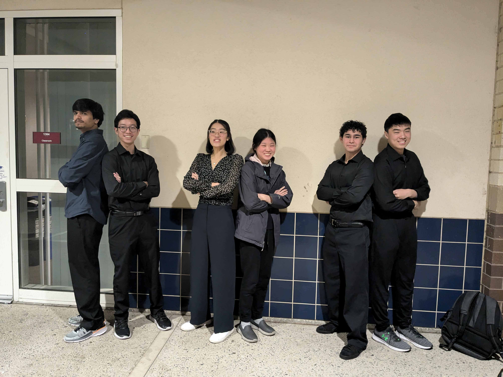

Rover Assembly: Optimizing the Center of Gravity for track performance
Project Leadership & CAD Design
As the Project Lead, I managed a 6-person team to ensure all mechanical and electrical subsystems remained compatible throughout the design cycle while additionally maintaining team morale by buying In-N-Out. My role as Lead CAD Designer involved:
- Generating 3D models for all custom chassis components.
- Coordinating task distribution and technical milestones for the team.
- Integrating drivetrain mounting points into 3D-printed ABS housing.
- Purchasing In-N-Out and Japanese curry for morale.

Me [2nd from the left] back to back with Shishir
Team Collaboration
Success in the ENGR 7A competition was the result of communication and task synchronization. I focused on fostering an enjoyable team environment where members could comfortably work together.
Methodology
Weekly meetings and collaborative CAD reviews.
Objective: Speed & Stability
This project required the design and fabrication of a remote-controlled 4-wheeled rover to compete in a timed race. The engineering focus was on creating a chassis that could handle high-speed transitions without compromising structural integrity.
Weight Distribution
Strategically placed heavy components to achieve a low Center of Gravity, reducing body roll during cornering.
Drivetrain Efficiency
Calculated gear ratios (45:15) to maintain a competitive top speed on technical sections.
Manufacturing & Testing
The chassis and overall rover was developed using a waterfall approach. Material choice was balanced between the low weight of Coroplast and the ease of manufacturing of 3D-printed components.
Initial CAD
Being one of my first ever CAD projects with manufacturing involved, I had no idea how to design for manufacturing. My goal in mind during this phase therefore was to make something that looked cool and seemed to function.
The reason I include this early CAD is to demonstrate my evolution from my early days in fall of freshman year. Since then, I've learned that designing for manufacturing and assembly is incredibly important, leading me to presently always consider DFM/DFA principles in my designs.

Performance Demonstration
Early Track Trial: Shishir at the controls
My Contribution
- 01 Project Lead
- 02 Lead CAD Designer
Technical Specs
- Drivetrain Rear-Wheel Drive (RWD)
- Chassis Materials Coroplast & 3D Printed ABS
- Control System 2.4GHz Receiver w/ Comimark Brushed ESC
- Design Focus Cornering Dynamics & Low-Mass Design
Final Design Report
Technical submission: CAD drawings & electronics diagrams.
View Full PDFOutcome
Successfully navigating the technical course without structural failure. achieved a 2nd place time out of 32 teams, highlighting the effectiveness of our design approach.